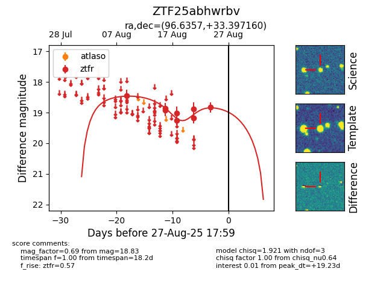

Target ZTF25abhwrbv at 2025-08-27 17:59, see:
FINK: fink-portal.org/ZTF25abhwrbv
Lasair: lasair-ztf.lsst.ac.uk/objects/ZTF25abhwrbv
ALeRCE: alerce.online/object/ZTF25abhwrbv
alt names
ZTF25abhwrbv (ztf,fink)
coordinates:
equatorial (ra, dec) = (96.6357,+33.39716)
galactic (l, b) = (180.3134,+9.81328)
photometry
last ztfr=18.83
8 ztfr detections
